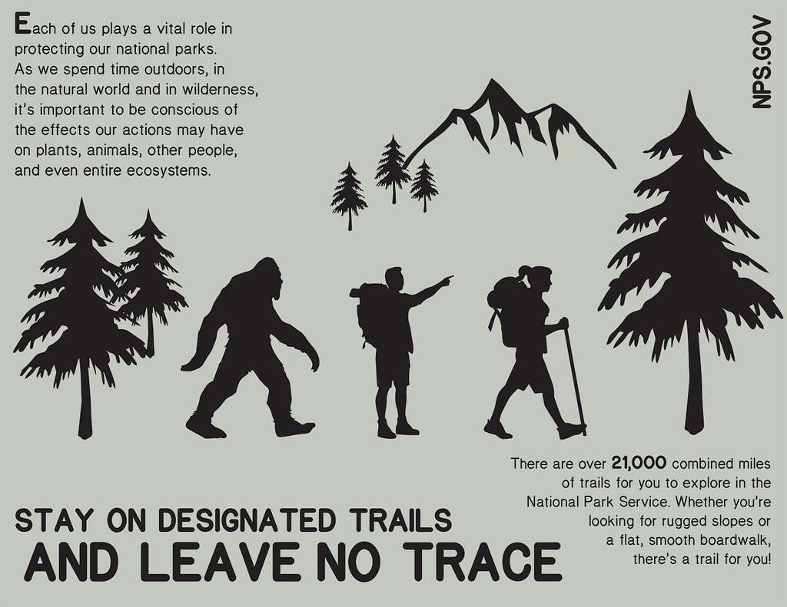
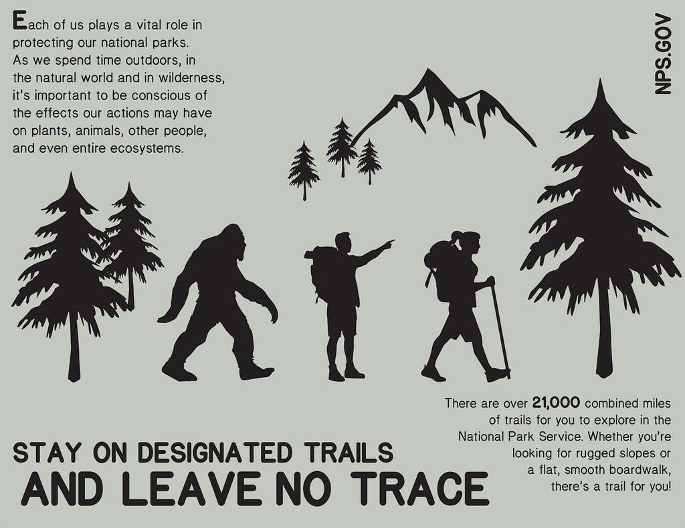

About Alex David


From 9-5 😎
Alex is a Queens, NYC native. He lives in the suburbs closer to Long Island, and loves to wake up early to plan out his day. He used to be a vegetarian, but sadly isn't one anymore.Currently a student, a TKH Fellow (yeah TKH!), and an open book. You can ask him anything...
Alex is currently pursuing a Bachelors of Science degree in Computer Science with a minor in Mathematics. His strongest skill is communication. He can give a persuasive elevator pitch, no problem. Because of his past experience in standup comedy, Alex has the confidence needed to present ideas clearly and step out of his comfort zone. Alex loves to fail because with failure comes growth. After receiving many job application rejection emails, unfortunately is now his favorite word. From his childhood, he learned the reward that comes from running towards challenges, and actively seeks them out. If you want somebody that believes in following their potential and challenging the status quo, Alex David is your guy.
What Alex says about a vegetarian’s diet: It’s just a bush
.

 

After Hours 🕺
Alex is a music lover, through and through. After playing violin for a year, he now has his own guitar and plans to learn how to read sheet music. Alex's biggest passion is his love for animals. He has read over 120 encyclopedias, which really says it all. Even his Grandma thought he could go on Oprah with his knowledge. Steve Erlwin was his hero as a kid, and one of his favorite places is the Amazon Rainforest. He often went to Guyana to see family, and loved hiking and fishing in the rainforest there.
His favorite collection of movies is the Planet of the Apes franchise, from the 1970s version to present. Alex's favorite book is Gregor the Overlander by Suzanne Collins, as he loves the world of big insects and animals. He also believes in Bigfoot, and has a little figurine of Bigfoot at home.
On top of pursuing TKH's Innovation Fellowship and a BS degree at the same time, Alex has plans for an app of his own as well as starting a new podcast. Though he has high standards for himself, Alex is proud of his ability to be introspective.